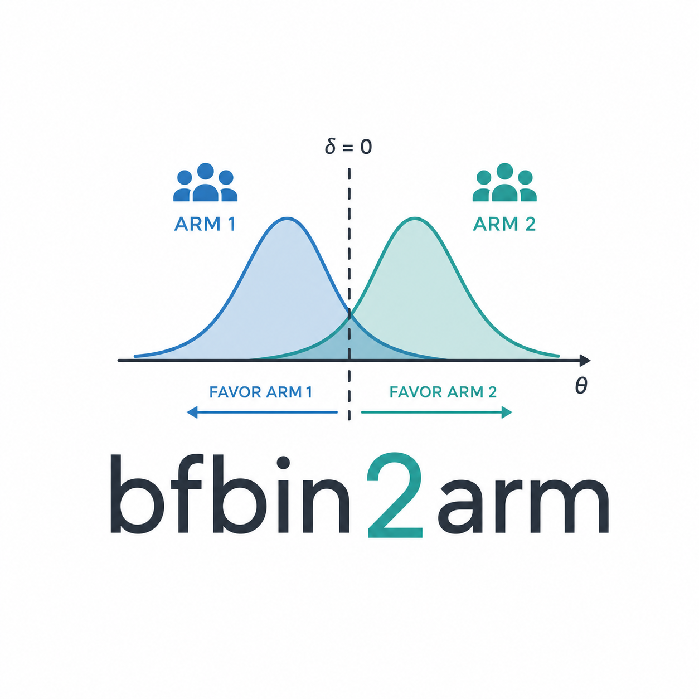

Plot a one-stage single-arm BF design
Source:R/s3-singlearm_bf_onestage_design.R
plot.singlearm_onestage_bf_design.RdPlot a one-stage single-arm BF design
Arguments
- x
An object of class
"singlearm_onestage_bf_design".- what
Character string; currently one of
"all"or"oc".- legend_pos
Position passed to
legend. Either a keyword such as"topright"or a numeric vectorc(x, y).- legend_inset
Numeric inset passed to
legend()whenlegend_posis a keyword.- ...
Currently unused.